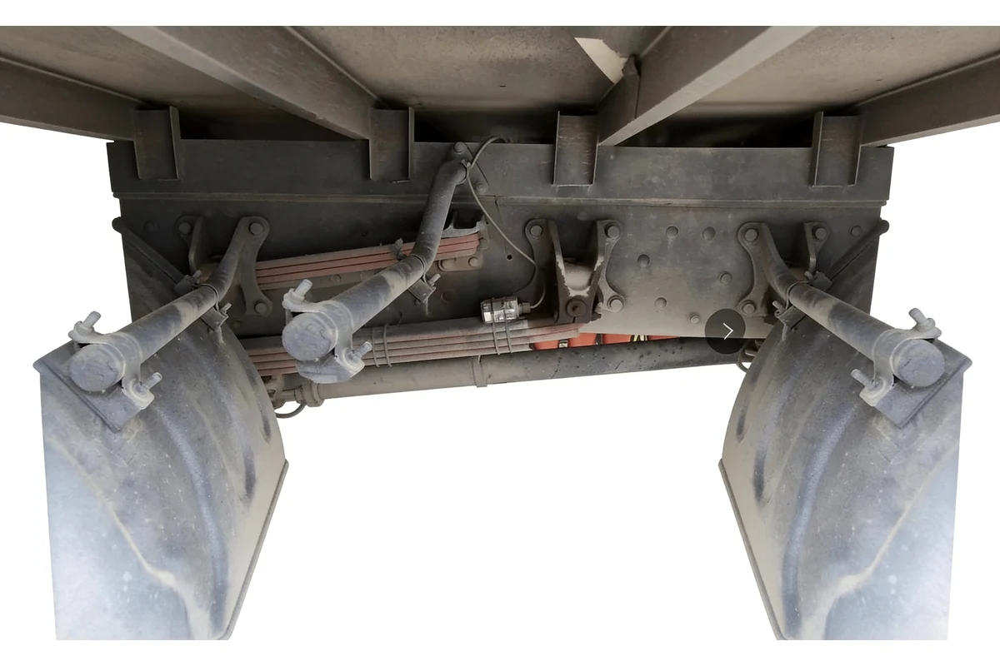
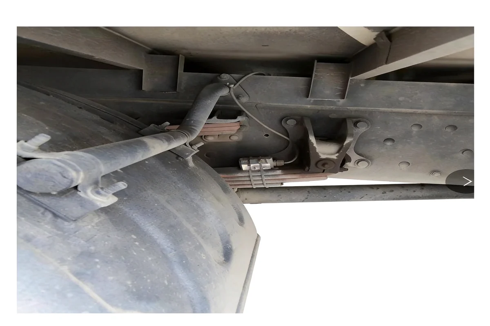
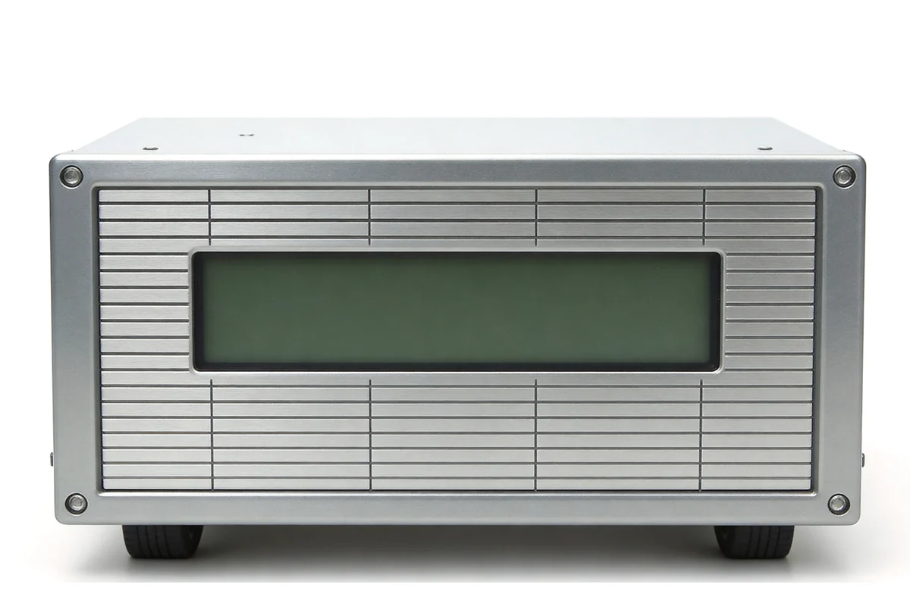
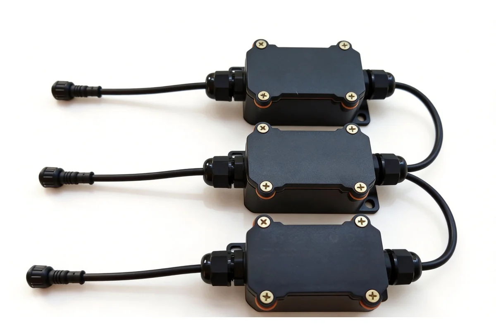

M6 车载载重传感器由载重主机与载重传感器两部分组成，通过安装在车辆悬挂拱形弹簧板上，实时监测空车与重车状态下的悬挂形变角度变化，经 MCU 计算换算出当前车辆实际载货重量，以数字信号输出。适用于物流运输、工程车辆、矿山车辆等需要实时载重监测的场景。
高精度称重
角度分辨率 0.001°，单个数据对应重量仅零点几千克，动态波动小。
安装简便
无需焊接，无需单独接线，采用防水快速接头和 AB 胶粘贴固定。
全防水设计
主机 IP68 防水，内部完全封胶处理，适应户外恶劣环境。
工业级可靠
工作温度 -40°C ~ 80°C，工业级模块，故障率低，使用寿命长。
模块化维护
直接输出重量数据无需现场标定，模块化组网，定位问题直接更换。
型号选型
载重监测按监测环节组织类别，从实时采集、安装标定到数据追溯到行业应用，覆盖载重管理的完整过程。

载重实时监测系统
- 货物重量的实时采集、统计与超载判定
- 实时采集与超载判定

无损安装与标定
- 不破坏车厢结构的传感器安装与现场标定
- 不破坏车厢结构的安装

数据回放与追溯
- 电脑端与移动端的载重曲线回放
- 曲线回放与运单核对

行业应用领域
- 建材、钢铁、矿区、煤炭、化工、商砼、环卫与渣土运输的载重管理
- 重载运输行业的合规管理
接口兼容
RS485
- Modbus RTU 协议，对接车载终端、PLC、工控机。
CAN 总线
- 符合 J1939 协议，直连车载 ECU 与综合管理系统。
4G 传输（Pro）
- 内置 Cat.1 模块，实时上传载重数据至云平台。
平台对接
- 支持接入 AXLTeco 车辆管理平台、第三方 TMS/WMS。
应用方案
车辆管理平台
实时监控载重、位置、轨迹，超载告警，载重报表统计。
TMS 运输管理
载重数据对接运输管理系统，自动核算运费与装载率。
智慧物流
物流车队载重实时监控，防止超载与偷卸，提升运输安全。
工程车辆管理
渣土车、混凝土搅拌车载重监测，精准计量，防止超载。
优势保障
核心优势
高精度
0.001° 角度分辨率，静态精度 ±1%，动态精度 ±3%。
易安装
无需焊接，AB 胶粘贴 + 防水快速接头，30 分钟完成单轴安装。
高可靠
IP68 防水，-40°C~80°C 工作温度，工业级模块寿命超 5 年。
交付服务
现场标定
工程师现场完成空车/重车标定，确保称重精度。
平台接入
协助接入车辆管理平台，配置告警规则与报表。
培训交付
培训运维人员日常使用、故障排查与数据读取。
服务保障
质保承诺
整机质保一年，核心传感器延保两年。
本地响应
尼日利亚本地团队，48 小时内现场响应。
远程支持
7×24 远程技术支持，设备状态实时监控。